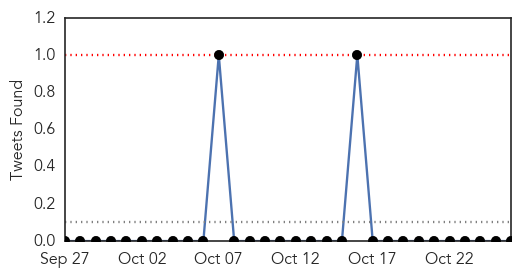
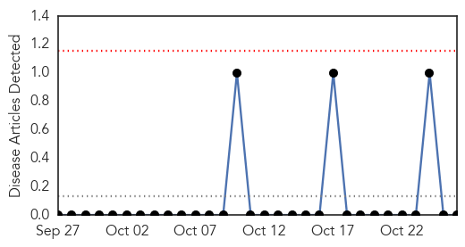

Dengue Fever
30-Day Web Trend
1 alerts, 0 warnings
30-Day Twitter Trend
2 alerts, 0 warnings

Article Locations
Article Confidences
Top Articles:
Top Tweets:
-
No tweets found for Oct 26, 2014
Mumps
30-Day Web Trend
0 alerts, 0 warnings

30-Day Twitter Trend
0 alerts, 0 warnings

Article Locations

Article Confidences

Top Articles:
-
No articles found for Oct 26, 2014
Top Tweets:
-
No tweets found for Oct 26, 2014